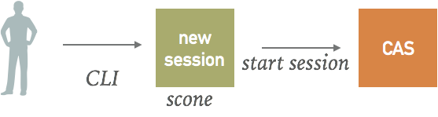
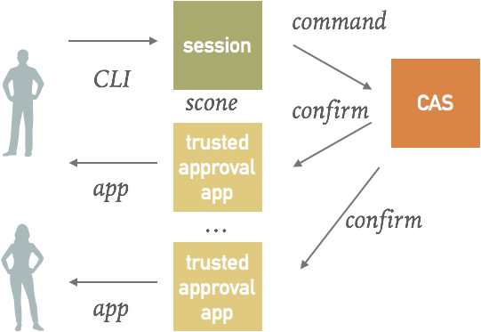

scone session¶
A session is a unique namespace that is used for the management of keys associated with the execution of an application. scone session manages keys and their access rights in the context of scone-based applications.
Motivation¶
The management of keys is one of the important problems to be addressed when building secure cloud applications. Here are some typical questions that need to be addressed:
-
how to generate keys in a secure fashion?
-
how to share keys between different applications?
-
how to prevent unauthorized access to keys?
-
how to ensure that keys stay confidential - despite, for example, administrator churn.
-
how to ensure that no human can read keys?
More advanced questions that we need to address is on how to ensure company policies, like
-
how to enforce company policy regarding which versions of a binary are permitted to be executed?
-
how to restrict the teams that can certain applications?
Another related topic is the management of the private key of certificates.
- how to provide enclaves with certificates and the associated private key in a secure fashion?
Related question that we need to address is on how to make this practical to use. In particular, we need to address the following question:
- how can we achieve all this without the need to re-engineer our applications?
Approach¶
scone session helps you to address the above questions. Before we describe the details of the scone session command line interface, we motivate its design from the threat model that we must address.
Problem: No trusted party to manage access rights¶
Traditionally, most systems have the concept of an administrator that can manage the access rights to resources. For example, a root user in an operating system or a database can determine which resources a user can access.
In SCONE, we do not want to require an administrator that controls the access to secrets. Instead, we would like to empower each user such that this user can control access to her resources without any administrator being able to overwrite the access control policy of the user. However, a user can decide to share resources with others. For example, a user could share access to the key of an encrypted volume with other users.
Approach: Session Concept¶
Our objective is to provide key management without introducing the need to have a trusted party that is responsible to administrate access rights. The main idea is that each user can create a session (an alternative name would be a namespace) in which the user has complete control over access rights to the keys created within this session.

Problem: No Trusted Input and Output¶
One of the issues that we face in the context of secure trusted computing is that we can neither trust the cloud computers and in many cases, not even our development machines. In some cases, the cloud machines might even be more secure than our development machines. Hence, we need to address the following problem:
Problem: Any key that is received via an input device or output via an output device cannot be considered to be confidential anymore (- unless the key itself is encrypted)
Approach: Keys are always encrypted¶
To address this problem, we need to ensure that keys are never input or output as plain text. To achieve this, we support generation of keys and management of keys that never require keys to be transferred as plain text.
Problem: Authorization¶
If there is no trusted input and output, how can we know that certain requests / commands were indeed issued by a specific user? For example, a command is issued by a user O to give user U access to a key K that O has created. How do we ensure that it is indeed the intention of O to give U access to K? After all, the input for issuing this command my be inserted by U or some other interested party.
Approach: Multi-factor authentication and authorization¶
While we do not trust that the input is confidential and under the control of the user, we assume that we have a reasonably secure way to authenticate the user and to ask for an authorization from the user. For the authentication and authorization, we can specify multiple devices that perform the multi-factor authentication and authorization.
The authentication and authorization will be performed as a combination of face ID, finger print ID, and PIN codes running on one or more devices.

Command line interface: scone session¶
scone session create¶
scone session create starts a new session and activates this session, i.e., makes this the default session. Outputs the name of the session on success.
Options¶
| scone session create | # | Description |
|---|---|---|
| --approve URL | 0-n | URL for approval of certain operations |
| --fingerprint FP | 1 per URL | defines the fingerprint of the public key for the preceeding --approve URL |
| --tenant TENANT | 1 | name of tenant |
| --name NAME | 1 | name to identify session |
| --no [OP,] | 0-1 | define what operations that do not require approval.(default: ALL = all operations require approval) |
We support the following commands / operations:
| Operation (OP) | Approval? | Description |
|---|---|---|
| create | required | create a session. Approval to verify the arguments of the command and to ensure that issued to correct CAS |
| key | required | create a key. Approval to verify the arguments of the command and to ensure that issued to correct CAS |
| share | required | share the keys of this session with another session. Verify that command was issued by owner and that arguments are correct. |
| join | required | join another session (if that session shared all its key with this session). Verify that command was issued by owner and that arguments are correct. |
| checkpoint | required | checkpoint session information. Verify that command was issued by owner and that arguments are correct. |
| restore | required | restores a session checkpoint. Verify that command was issued by owner and that arguments are correct. |
Caveats¶
scone session create creates credentials to identify this session and to be able to modify the session. The session credentials are stored in file $HOME/.scone-session/TENANT/NAME/SESSIONID.cred: this file is encrypted with the seal key of scone session. If this file is corrupted or deleted, access to the session keys is not possible anymore. Hence, this file should be backed up. In case the scone CLI runs inside of a container, this file should be mapped into a volume.
Since this file is encrypted with the seal key of scone session, if the CPU that created this file fails or the CPU microcode is updated, this file cannot be accessed anymore. Hence, the owner of the session should share the access rights on multiple machines. We support this with the help of scone session share and scone session join. Alternative: only support scone session join and authorize via approval only. This would help with software upgrade too. Authorize new client via session join.
Session information is also stored in a CAS. You can copy the session information from one CAS to another CAS with the help of scone session checkpoint and scone session restore. Moreover, you can use these two commands to move a session from one CAS to another CAS.
To be able to support updated scone clients, you must enable that a session permits additional clients with different MRENCLAVEs. Also, to support updated CAS. We support this via scone session join to permit new clients to get existing session information. To support new CAS, a user has to perform a checkpoint and restore operation.
Example:¶
scone session create --tenant myself --name www \ --approve ap.com/myself --fingerprint 43:51:43:a1:b5:fc:8b:b7:0a:3a:a9:b1:0f:66:73:a8 \ --approve ap2.com/myboss --fingerprint 55:45:a1:b5:fc:8b:b7:0a:3a:a9:b1:0f:66:73:a8 \
scone session key¶
Creates a key or a certificate and makes it available at a given key name.
scone session key --name KEYNAME [--replace] —-type TYPE [--access [session]:MRENCLAVE]]
Options¶
| scone session key | Description |
|---|---|
| --scope SCOPE | limits visibility of key: final, session, full. final = only participants specified with option --access are permitted to receive the key. session = one can add more enclaves that can access the key but it is not possible to extend this beyond the current session. full no limit to what extend the user can share this key with other sessions. |
| -- type TYPE | determines the type of key. TYPE=[DIGIT:N,ALPHA:N,ALPHANUM:N,PRINT:N,CERT:N] |
scone session share --key KEYNAME --gentoken --session SESSIONID¶
Use cases:
1) We share the public key and the private key of an image with a client
scone session share --key image/NAME/fspf-key --pubkey signer --gentoken --duration 366
2) We share the complete session with another client:
scone session share --gentoken --all
3) Share all keys related to a stack that was created
scone session share --stack FILE --gentoken
Prints a token that can be used to access all keys to be able to run this stack
scone session join --session SESSION-ID --token TOKEN¶
Use case:
Replace the current session by another session:
scone session join --token TOKEN
We effectively join a already existing session ID with a new client.
scone session import --token TOKEN¶
scone session import --token TOKEN [--replace]
Import all keys related to the TOKEN. If --replace is given, keys are updated in case they already exist. Otherwise, an error message is issued.
scone session checkpoint¶
Copies the current state of a session from the CAS and stores it encrypted on the local file system.
scone session checkpoint
scone session restore --session SESSIONID --CAS URL¶
Take the checkpoint of session SESSIONID and stores it to CAS referred to via URL.
If the session already exists, this will result in a failure.
scone session remove --force¶
Removes a current session from the CAS.
scone session activate --session SESSIONID¶
Switches session to another session with ID SESSIONID
Example: Sconedocs website¶
Root ...
We need to specify the path, the key and the tag of the file system protection file:
image: aptsigner fspf_path: /nginx/fspf.pb fspf_key: 970f4925bb7b221461f3d1a3f17450aa42844539de24f5acc1b45b8c140f9467 fspf_tag: 5930bffbd9ea2f1317e6872b032334db
We get this information from the CAS for the current session. Key directory is /image/aptsigner/fspf_path, ...
Example: Signing APT packages¶
Our objective is to sign Debian/Ubuntu packages without ever having the private key be visible in the clear. In particular, we do not want be able ourselves to change our minds and make the keys visible to us or others.
Approach: We package the software in a container image that contains all code required to sign packages. To do so, we have two volumes:
1) packages: contains the package to be signed
2) keyring:
Sharing Keys¶
Access to keys:
-
public key: share with everybody
-
encrpytion key: share access with token
-
generate token: with limited lifetime
© scontain.com, December 2017. Questions or Suggestions?